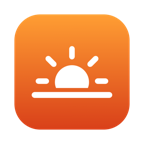

Guide to better sleep
Screens, blue light and better sleep.
Light in the evening, especially blue light, can delay melatonin, the hormone that tells your body it's time to sleep, and bright screens late at night are a common source. For more restful sleep: keep a regular bedtime, make screens warmer and dimmer in the evening (red light affects melatonin the least), put them away for the last half hour when you can, and keep your bedroom dark and cool. Filtering blue light helps most as part of these habits, not on its own.
Updated 29 September 2026.
How evening light affects sleep
Your body clock uses light to tell day from night. In the evening, as light fades, the body releases melatonin, which makes you sleepy. Research shows that light in the hours before bed can hold melatonin back and push sleep later, and that short-wavelength blue light has the strongest effect. Brighter light and longer exposure have more effect than dim, brief light.
A screen is a bright light held close to your eyes, often late into the evening. That's why sleep experts suggest dimming screens, warming their color and giving yourself screen-free time before bed.
Better sleep habits for evening screen time
- Keep a regular scheduleGo to bed and get up at about the same time every day, weekends included. Most adults need at least 7 hours of sleep.
- Warm and dim screensFrom a few hours before bed, use a blue light filter and lower the brightness. After bedtime, pure red is the gentlest.
- Wind downStop work and fast-paced content 30 to 60 minutes before bed when you can. Reading, calm music or a bath help your mind slow down.
- A dark, cool bedroomKeep the room dark, quiet and cool. Charge your phone away from the bed so it doesn't light up at night.
- Get daylight in the morning. Bright light early in the day helps set your body clock, so you feel sleepy at the right time in the evening.
- Watch caffeine and alcohol. Caffeine can keep you awake for hours, and alcohol makes sleep lighter later in the night.
- Keep late naps short. Long naps late in the day make it harder to fall asleep at night.
How Dozelight fits in
Dozelight's Auto mode follows your own bedtime and wake-up time. It warms the screen gradually through the evening, to about 1900K at bedtime, switches to red light only after bedtime, when a late glance at the screen should disturb you least, and fades back to normal in the 30 minutes before you wake. You set it once and don't have to think about it again. Extra Dim takes the screen darker than the lowest brightness setting, and Darkroom turns pages black with red text for reading in bed.
Questions
Does blue light really affect melatonin?
Yes. Studies show that light in the evening suppresses and delays melatonin, and that blue light does so more strongly than other colors. How bright the light is and how long you're exposed matter a lot too.
Will a blue light filter fix my sleep?
Probably not on its own. It reduces one thing that can push sleep later, but regular sleep times, winding down, a dark bedroom and daylight in the morning matter at least as much. Think of a warm, dim screen as one good habit among several.
Is red light better than orange at night?
Red light has the weakest effect on melatonin of any color, so a red screen is the gentlest option late at night. A warm orange is fine earlier in the evening.
How do I know if I'm sleep deprived?
Common signs are feeling sleepy during the day, needing an alarm to drag yourself up, trouble concentrating, irritability, and sleeping much longer on free days. Short sleep over a long time is linked to health problems, so if it goes on for weeks, or you snore loudly or wake up gasping, talk to a doctor.
How long before bed should I stop using screens?
Sleep experts often suggest 30 to 60 minutes. If you do use a screen late, make it as warm and dim as you can, and choose something calm.

A screen that winds down with you.
Dozelight warms your screen through the evening and switches to red after bedtime, on Mac and Windows. Try every feature free for 14 days.
This guide is general information, not medical advice. If poor sleep, tiredness or eye discomfort goes on for weeks, talk to a doctor or an eye doctor.